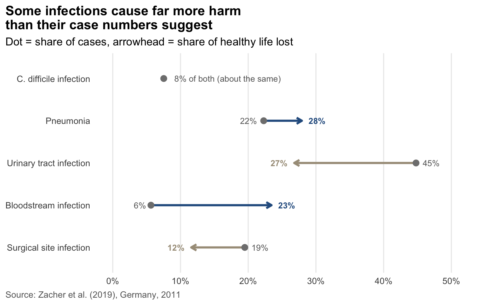

The Problem
Quick question. In one place, 2.4 out of every 100 hospital patients catch an infection during their stay. In another, it’s 2.8. Which one has the bigger problem?
The second, surely. And on the surface, it’s not wrong, fewer patients getting infected does sound like the safer, better-performing system.
But when I looked a little deeper, the answer flipped. The first place is Germany, the second is the European average, and by one important measure, Germany actually came out worse.
Some patients pick up a new infection while they’re in hospital, such as pneumonia, a bloodstream infection or a urinary tract infection. These are called healthcare-associated infections. But not all infections are equal. A urinary tract infection is common but usually mild, while a bloodstream infection is rarer but can be deadly. So researchers measure harm a different way.
NoteWhat’s a DALY?
A disability-adjusted life year (DALY) is one year of healthy life lost, whether from dying early or living with illness. It lets us compare a common, mild infection with a rare, deadly one on the same scale.
That leaves two questions:
- Which infections cause the most harm?
- If German patients are less likely to get infected, how can Germany lose more healthy life?
What the evidence shows
Where the data comes from
Zacher et al. (2019) used a one-day survey of 9,626 patients in 46 German hospitals from 2011, chosen to represent hospitals of different sizes.
They compared it with the same survey run across 29 European countries in 2011–2012, covering more than 273,000 patients. To turn these surveys into estimates of harm for a whole country, they built a free tool called BHAI.1
But how common an infection is and how much harm it causes are two very different things.
In Figure 1, each arrow starts at an infection’s share of cases and ends at its share of theharm. Bloodstream infections are only about 6% of cases but cause almost a quarter of the harm.Urinary tract infections are the opposite: nearly half of all cases, but only about a quarter of the harm. Together, pneumonia and bloodstream infections make up just 28% of cases but about half of all healthy life lost.
How can “safer” Germany lose more?
Table 1 shows how the answer flips depending on which number you look at.
| Measure | Germany | EU/EEA | Looks better |
|---|---|---|---|
| Infections per 100 hospital patients | 2.40 | 2.83 | Germany |
| Infections per 100,000 people | 592.1 | 467.9 | EU/EEA |
| Healthy years lost per 100,000 people | 308.2 | 290.0 | EU/EEA |
Think of it like two roads. On Road A, 3 in every 100 cars crash, but only 1,000 cars use it eachday, so that’s 30 crashes. Road B is safer: only 2.4 in every 100 cars crash. But it’s a busy highway with 3,000 cars a day, so that’s 72 crashes. Road B is the safer road per car, yet it still has more crashes overall, simply because so many more cars drive on it.
Germany is Road B. Each patient’s chance of catching an infection is lower (the crash rate), but far more people go into hospital (the traffic), so the total harm across the country (the number of crashes) ends up higher.
WarningHow sure can we be? (click to expand)
These numbers are estimates, and some are quite uncertain. Germany’s harm could be anywhere from about 221 to 416 healthy years lost per 100,000 people, and Europe’s from about 215 to 377. Those ranges overlap, so the study can’t say for certain that Germany is really worse.
The authors also note that some of the evidence linking infections to deaths and disability is weak, and that using a different group of German hospitals raised the total from about 249,000 to 290,000 healthy years lost.
Conclusion: question the numbers you see
So, which infections do the most harm? Pneumonia and bloodstream infections: only about a quarterof cases, but half of all the healthy life lost. And how can “safer” Germany lose more? Because arate among hospital patients and a total across a whole country answer different questions, andGermany’s large hospital population may tip the balance (Zacher et al. 2019).
What stuck with me is how many times the story changed as I kept looking. Count cases, and urinary tract infections look like the biggest problem. Compare hospital rates, and Germany looks like a success. Measure healthy life lost, and Germany looks worse. Check the uncertainty, and even that difference might not be real.
TipHow to question a number
- Ask what’s being counted. Cases, deaths and years of healthy life are different things.
- Ask “out of how many?” A good rate across a big group can still mean a big total.
- Check how sure it is. A precise-looking number can hide a wide range.
- Separate “likely” from “proven”. A suggested reason isn’t a confirmed cause.
Next time a statistic looks obvious, pause and question it. It might be answering a different question from the one you actually care about.
References
Zacher, Benedikt, Sebastian Haller, Niklas Willrich, Jan Walter, Muna Abu Sin, Alessandro Cassini, Diamantis Plachouras, et al. 2019. “Application of a New Methodology and R Package Reveals a High Burden of Healthcare-Associated Infections (HAI) in Germany Compared to the Average in the European Union/European Economic Area, 2011 to 2012.” Eurosurveillance 24 (46): 1900135. https://doi.org/10.2807/1560-7917.ES.2019.24.46.1900135.
Footnotes
BHAI stands for “Burden of Healthcare-Associated Infections”. It’s an R package anyone can download from CRAN.↩︎